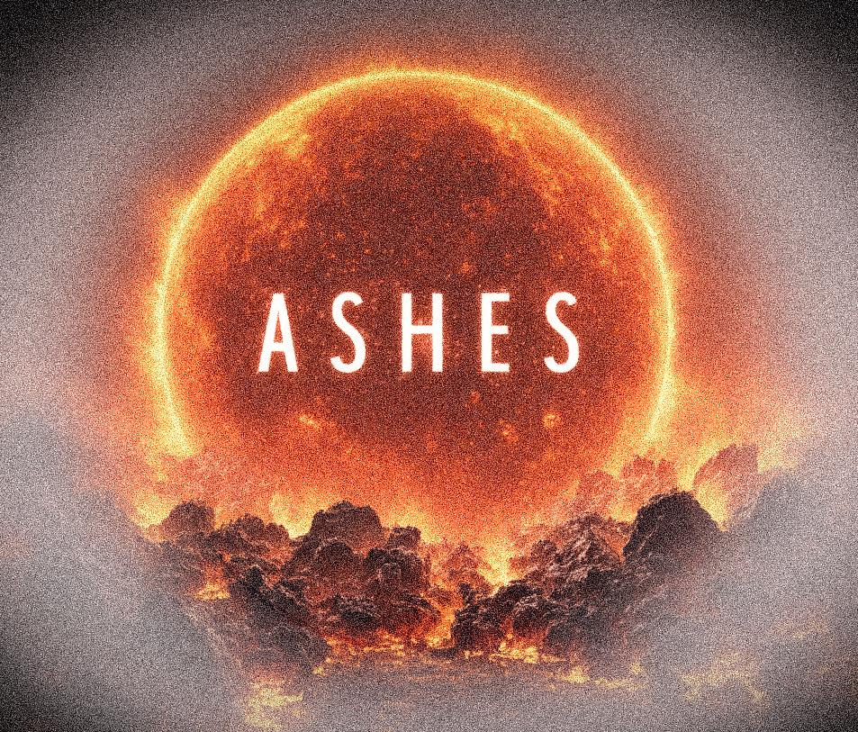

ERC Starting Grant
ASHES starts in August 2026 at University College Dublin
ASHES will quantify how the dust produced by AGB stars depends on the specific outflow from which it originates.

ERC Starting Grant
ASHES will quantify how the dust produced by AGB stars depends on the specific outflow from which it originates.